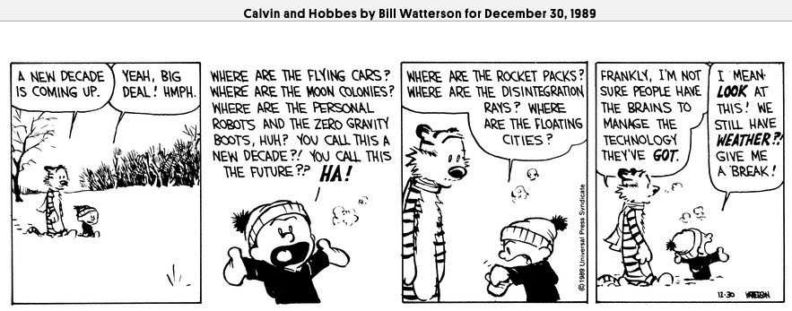

“The deepest lessons come out of the deepest waters and the hottest fires.” ~ Elisabeth Elliot
CA wildfire, Orange skies in SF Bay area, and Dune movie trailer
It seemed like a weird coincidence that Dune1 trailer2 got released on the same day that the skies in San Francisco turned orange3. I turned to Twitter and Google to see if it was just me! Was happy to find that many other people thought so too. Phew! It is sometimes strange to have a thought and think, ‘what if nobody thought that way?‘. Another thing that flashed through my mind when I saw the trailer was the thought that they had cast a South Indian actor in the movie. For a moment, I thought that Duncan Idaho, played by Jason Momoa was Manoj K Jayan! Googled to find if someone thought so. Looks like no one did! But Jason Momoa looked quite different from what we saw in GoT or Aquaman.
Back to the coincidence, yes, there were numerous tweets, memes, and articles on the same. In fact, a lot of sci-fi movies depict an alien planet like red deserts. So, looking out of the window and seeing it, in reality, was too surreal. One could draw a loose parallel to the 9/11 tragedy4. Prior to the incident, there were hundreds of movies that showed tall buildings collapsing with thrilling stunts, but when the incident happened in reality, it was shocking. The power of our imagination far too exceeds the perception of our physical senses. As virtual reality becomes more mainstream and gaming becomes very immersive and engrossing, I wonder if people could lose a sense of reality. A situation quite similar to The Matrix5.
California - The land of Dreams, Earthquakes, Droughts, and Fires
An article that caught my eye was titled “‘Dune’ trailer released as West Coast wildfires rage on, fans say Arrakis-like orange skies part of the promo”6. Though it was meant in jest, I think there may be many people who believe that it could well be a movie promo stunt, that it is possible to do such a thing to promote a movie, and that the technology to change an entire landscape probably exists. The Gold Rush in the 1800s paved the way to the idea of the ‘California Dream’ to believe in the unbelievable, expecting to strike it rich at any moment, wiping the slate clean and living anew, and living freely. The state motto is “Eureka”, which reminds one of the naked Archimedes running through the streets of Syracuse7 to tell of his discovery of the relationship between the density of a substance and the amount of water it displaces. One could as well equate the neo inventors of the tech industry or space exploration or electric cars with the phrase of Eureka now. From the bubble of Silicon Valley in the North to Hollywood in the South, people are constantly creating new things, the next new software or fantasy movies with incredible visuals, using machine learning and multi-core computers, perpetuating the myth of human progress that we do not yet possess.
Shaky grounds and Raging fires
That the dreams manifest and more dreams are unspooled in the background of a land that is seemingly unsafe, seems ironic. Almost the entire state is on large earthquake faults, and a major earthquake could wipe out big cities like SFO or LA at any time. Forest Fires are a recurring thing every year, and in the past few years, they have become bigger. This year over 3 million acres got burned down 8.
Academics believe that between 4.4 million and 11.8 million acres burned each year in prehistoric California. Between 1982 and 1998, California’s agency land managers burned, on average, about 30,000 acres a year. Between 1999 and 2017, that number dropped to an annual 13,000 acres. 9
Many people who experience a couple of earthquakes move out of California to different places since they don’t want to pin their future on shaky grounds. The first earthquake, for anyone who comes new to the area, is an experience of a lifetime. I’ve experienced a couple of small ones, all while in office, and they were over before I could react.
But forest fires are extremely scary. Fire is a much more visible destructive force. It is heart-wrenching to see raging fires razing towns and vast expanse of forests to the ground. Imagining the heat and the skin burning fills the heart with dread. A city named Paradise10 got destroyed completely a couple of years ago. It was probably a sign of what was coming for the larger “paradise” that is the state of California.
Can fire be not controlled?
In Sapiens: A Brief History of Humankind11, Yuval Harari, a historian, tells the history of humanity in a most engaging manner like a thrilling story revealing one thing after another. He says for humans, “a significant step on the way to the top was the domestication of fire”. It is true. The ‘domestication of fire’ catapulted humanity to make huge strides of progress and change the face of the Earth forever. An ‘Animal of No Significance’(ref: Sapiens) is now able to leave Earth and go to space, a remarkable achievement in a short amount of time.
In spite of all the technological progress, why are people not able to control fire? That too raging in a place like California. I guess the pandemic and the devastating forest fire this year has removed the veil and shown the reality. Though a lot of progress has been made, we’re still on the edge of the vast sea of knowledge. There is much to learn and discover about the nature of things on Earth itself. Much to learn about the human body itself. Somehow the ability to create things virtually and seeing things in CGI in movies and TV series makes one believe that humanoid robots are already here, though it is far from the case. Here is the sentiment from Calvin in 1989! 12

The article9 in ProPublica where the quote above is referenced from, says, “Megafires, like the ones that have ripped this year through millions of acres, will continue to erupt until we’ve flared off our stockpiled fuels. No way around that.” So, as per experts, the way to avoid massive fires, is to light smaller controlled fires. Prevention is better than cure!
Maybe the next breakthrough is to make fire-resistant material cheaper so that homes and buildings can be constructed. That way, there is a Plan B in case fires cannot be prevented, or they go out of hand. Moreover, many of the fires are due to human errors and not naturally started. The Dragon Capsule 13 that Doug and Bob came back in, withstood temperatures of over 7000 degrees Centigrade on its entry to the atmosphere. So there is technology to build materials that are fire-resistant to the extreme and could be used to build structures that can withstand fire.
I’m sure there are thousands of other ideas. But I think the main problem is that there are too many problems to tackle, mostly caused by people and ideologies. Also, the collective human mind is now mostly engaged in the virtual world. The digital world is abuzz with activity - social media, gaming, online transactions, etc..
I hope things change. Either through controlled burning or the discovery of some technology to control the spread of fire, the future would be out of the grip of uncertainty.
Image Credit: https://www.flickr.com/photos/jeff_head/20799665403 Jeff Head/Flickr Public domain.
Footnotes
-
Dune 2020 film Trailer {{< youtube n9xhJrPXop4 >}} ↩
-
SF Gate Article - Thick wildfire smoke blocks sun, turns Bay Area sky orange, Verge article - The sky is on fire in San Francisco, and we flew a drone through it ↩
-
https://meaww.com/dune-trailer-released-us-west-coast-wildfires-rage-fans-reactions-arrakis-orange-skies-compared ↩
-
https://www.propublica.org/article/they-know-how-to-prevent-megafires-why-wont-anybody-listen ↩ ↩2
-
https://abc7news.com/timeline-of-terror-the-evacuation-of-paradise-from-beginning-to-end/4850913/ ↩
-
Sapiens – A Brief History of Humankind, Gates Notes on Sapiens ↩
-
https://www.space.com/spacex-crew-dragon-demo-2-home-port-arrival.html ↩